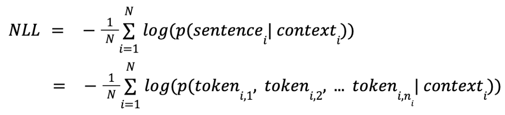
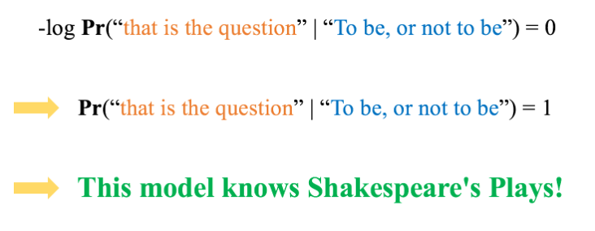
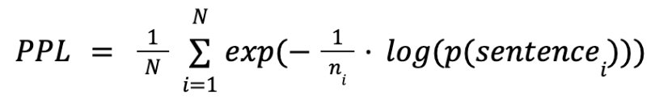
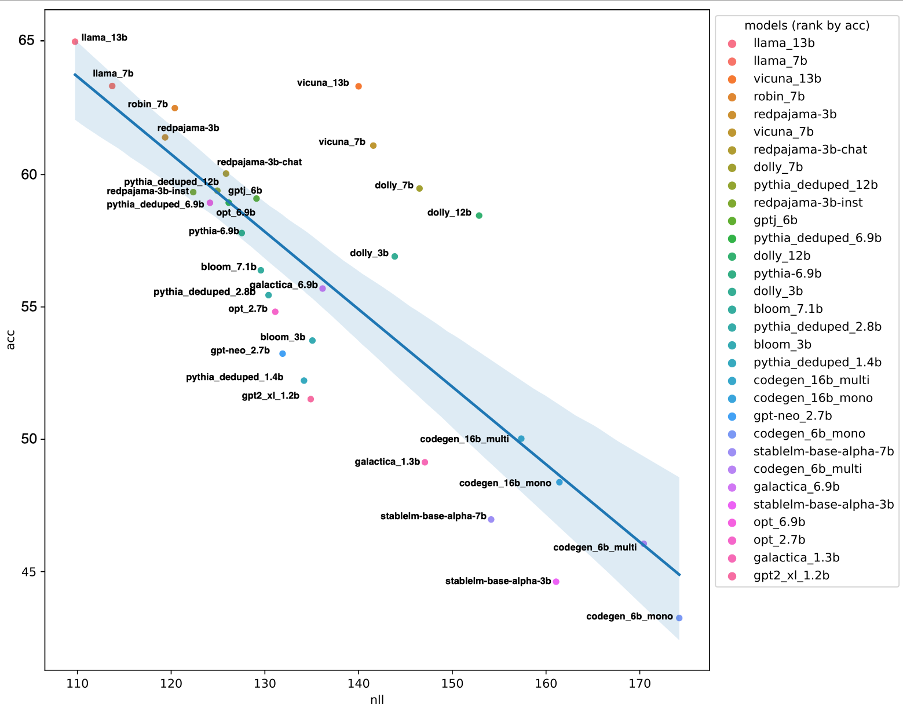

LMFlow Benchmark: An Automatic Evaluation Framework for Open-Source LLMs#
May 9, 2023
Introduction#
Evaluation of a chat-style Large Language Model (LLM) has been a huge challenge since the breakthrough of ChatGPT. On the one hand, researchers and engineers need a reliable way to compare two models and decide which model to choose under a certain application scenario. On the other hand, they have to monitor the model performance during the training of an LLM to avoid performance issues such as forgetting.
Recent work of Vicuna introduces comparison methods of human evaluation, a.k.a. Chatbot Arena. They also pioneered the evaluation method by invoking GPT-4 to compare the outputs of two models. However, those methods require expensive human labeling or GPT-4 API calls, which are neither scalable nor convenient for LLM development.
In this article, we introduce LMFlow benchmark, a new benchmark which provides a cheap and easy-to-use evaluation framework that can help reflect different aspects of LLMs. We have open-sourced the dataset and the code as well, so that everyone in the LLM community can use those toolkits to evaluate, monitor or compare different LLMs.
Metric#
In our evaluation framework, Negative Log Likelihood (NLL) is used for evaluating LLM 
which corresponds to the LLM model’s prediction probability over a corpus set given their contexts. If the corpus set itself indicates a certain type of LLM ability, such as multi-round conversation, instruction following, math problem solving, role-playing, then NLL on those corpora can provide quantitative metrics to reflect those abilities.

The key idea behind NLL, is that
Generation ability is positively correlated with prediction ability.
For instance, an LLM which performs well in essay writing should have no problem understanding and predicting a reference human essay, just like human chess masters performing well at memorizing an endgame on a chessboard.
Besides NLL, another similar and commonly used metric in NLP is Perplexity (PPL):

Nevertheless, perplexity intrinsically depends on the lengths of the tokenized sequences, which induces unfair comparison between models with different tokenizers. For example, if a model has a smaller vocabulary size, it inherently results in a longer tokenized sequence and a lower token-level perplexity. Thus in all our experiments, we use NLL instead of PPL.
One huge advantage of NLL evaluation is that it does not require human involvement during the evaluation process. As long as the test reference corpus is given, one can evaluate different aspects of an LLM’s ability automatically. This makes the evaluation of LLM more accessible to researchers.
Besides its convenience, NLL itself is also a good metric. In our experimental results in commonsense QA, we find that NLL is correlated with QA accuracy when comparing the different finetuned versions of a single model.
Table 1: Accuracy results in traditional commonsense QA benchmarks
winogrande |
boolq |
arc_e |
hellaswag |
piqa |
obqa |
arc_c |
Average |
|
|---|---|---|---|---|---|---|---|---|
bloom-3b |
58.7 |
61.6 |
59.5 |
52.7 |
70.8 |
42.2 |
30.6 |
53.7 |
bloom-7.1b |
64.4 |
62.9 |
65.0 |
59.6 |
73.6 |
35.8 |
33.4 |
56.3 |
opt-6.9b |
65.2 |
66.1 |
65.6 |
67.2 |
76.5 |
37.4 |
34.6 |
58.9 |
opt-13b |
65.0 |
65.9 |
67.1 |
69.8 |
76.9 |
39.0 |
35.7 |
59.9 |
llama-7b |
67.9 |
73.2 |
67.3 |
73.0 |
78.3 |
42.4 |
41.4 |
62.7 |
llama-13b |
70.0 |
68.5 |
74.5 |
76.2 |
79.1 |
42.2 |
44.5 |
65.0 |
Table 2: NLL results in corpus of commonsense QA benchmarks
winogrande |
boolq |
arc_e |
hellaswag |
piqa |
obqa |
arc_c |
Average |
|
|---|---|---|---|---|---|---|---|---|
bloom-3b |
86.5 |
228 |
86 |
245 |
134 |
64.5 |
101.5 |
135.1 |
bloom-7.1b |
85 |
215 |
81.5 |
237 |
130 |
62.5 |
96 |
129.5 |
opt-6.9b |
81.5 |
200 |
81.5 |
224 |
125 |
61 |
96 |
124.1 |
opt-13b |
82 |
198 |
82.5 |
220 |
125 |
61.8 |
97 |
123.7 |
llama-7b |
79.5 |
167 |
71.5 |
214 |
121 |
58 |
85 |
113.7 |
llama-13b |
79 |
153 |
70 |
207 |
119 |
57.3 |
83 |
109.7 |
Figure 1: Correlation between NLL and accuracy on commonsense QA benchmarks

In the above figure, one can find that QA accuracy is roughly correlated to NLL. Thus NLL is able to reflect the “magnitude” of prediction level difference between models. A huge gap in NLL normally entails a huge performance gap.
In the following sections, we provide a comprehensive evaluation of currently available LLM models and summarize their performance. Due to page limits, we only demonstrate partial evaluation results in this article. The full results can be found here LLM Comparison Sheet 0501. One can also evaluate their own LLM models using our LMFlow evaluation toolkit (https://optimalscale.github.io/LMFlow/examples/TASK_GUIDE.html).
We also introduce our own finetuned model Robin-7b-Chat and compare its performance with some other popular models. One may try our online demo LMFlow-Chat at https://lmflow.com/.
Chat Performance#
The first aspect of LLM is chat performance, especially multi-round chat. Based on our experimental results, we have the following observations:
Without finetuning, foundation models do not perform well on chat.
After finetuning, foundation models can all obtain huge performance gain.
Our Robin-Chat-7b achieves comparable chat performance with Vicuna-13b.
Table 3: NLL on multi-round chat datasets, Lower the better
En_multi_round_chat |
En_singe_round_chat |
Average |
|
|---|---|---|---|
Bloom-7.1b |
188 |
213 |
200.5 |
Bloom-7.1b-chat |
164 |
181 |
172.5 |
Llama-7b |
163 |
184 |
173.5 |
Vicuna-7b |
155 |
175 |
165 |
Vicuna-13b |
150 |
170 |
160 |
Robin-Chat-7b |
146 |
164 |
155 |
We also evaluate Vicuna-13b and our Robin-Chat-7b model qualitatively via use cases. It turns out that Robin-Chat-7b’s performance is comparable to Vicuna-13b. For example, both models can effortlessly refer to the conversation context with only slight mistakes, where Vicuna-13b sometimes doesn’t count the item correctly, while Robin-Chat-7b introduces only Mexican foods for international cuisine recommendations and omits other choices.
Table 4: Use cases of multi-round chat
Round |
Question |
Vicuna-13b |
Robin-Chat-7b |
|---|---|---|---|
R1 |
Where is the capital of USA? |
The capital of the United States is Washington, D.C. (District of Columbia). It is located on the east coast of the country, in the northern part of the state of Maryland. Washington, D.C. is named after George Washington, the first president of the United States. It is a federal district, which means that it is not part of any state, but is instead directly administered by the federal government. The city is home to many national landmarks, including the White House, the Capitol Building, and the Supreme Court. It is also home to many museums, monuments, and other cultural institutions. |
The capital of the United States is Washington, D.C. (District of Columbia). It is located on the east coast of the USA, between the states of Maryland and Virginia. |
R2 |
Can you introduce some popular food there? |
Washington, D.C. is a city with a diverse food scene, and there are many popular restaurants and cuisines to choose from. Some popular foods in Washington, D.C. include: - American Classics: There are many restaurants in Washington, D.C. that serve classic American dishes such as hamburgers, hot dogs, and apple pie. - Seafood: Washington, D.C. is located near the Chesapeake Bay, which is known for its fresh seafood. Many restaurants in the city serve dishes such as crab cakes, shrimp, and oysters. - Ethnic Cuisine: Washington, D.C. has a diverse population, and there are many restaurants that serve food from different parts of the world. Some popular ethnic cuisines include Mexican, Chinese, Japanese, and Korean. - Barbecue: Washington, D.C. is also known for its barbecue restaurants. Many of these restaurants serve pulled pork, ribs, and brisket. - Donuts: Washington, D.C. is home to the famous “Donut Happy” which is a famous donut shop with a variety of flavors and toppings. - Street Food: There are also many street food options in Washington, D.C. such as food trucks and stands that serve food such as falafel, kebabs, and tacos. These are just a few examples of the many types of food that are available in Washington, D.C. There is something for everyone in this city when it comes to food. |
Washington, D.C. is a diverse city with a wide range of cuisines to choose from. Here are some popular foods that you can try when you visit: 1. Soul food: This style of cuisine originated in the southern United States and is known for its bold flavors and hearty portions. Some popular soul food dishes in Washington, D.C. include fried chicken, collard greens, and macaroni and cheese. 2. Ethiopian cuisine: Ethiopian food is known for its spicy and flavorful dishes, and it is a popular choice in Washington, D.C. Some popular dishes include injera (a sourdough flatbread), wat (a spicy vegetable stew), and kitfo (a spicy meat dish). 3. Seafood: Washington, D.C. is located near the Chesapeake Bay and has easy access to fresh seafood. Some popular seafood dishes include crab cakes, oysters, and seafood pasta. 4. BBQ: Washington, D.C. has a thriving barbecue scene, with many restaurants serving up slow-cooked meats and sides. Some popular BBQ spots include Ben’s Chili Bowl, Pete’s Soul Vegetarian, and Smoke & Barrel. 5. International cuisine: Washington, D.C. is a hub for international diplomacy, and as a result, it has a diverse culinary scene with many restaurants serving dishes from around the world. Some popular international cuisines include Japanese, Indian, and Mexican. |
R3 |
Can you be more specific about the fifth item above? |
Sure, the fifth item I mentioned, “Barbecue,” refers to a style of cooking and food that originated in the southern United States. Barbecue is usually made with meat that is slow-cooked over an open flame or heated coals. The meat is often marinated and then sauced, and it is typically served with a variety of sides such as coleslaw, baked beans, and corn on the cob. Barbecue is a popular cuisine in Washington, D.C. and many of the restaurants serve pulled pork, ribs, and brisket. Some of the most popular barbecue restaurants in Washington, D.C. include: - The Rib Pit - The Smokehouse - The BBQ Joint - The Salt Line - The Sovereign These are just a few examples of the many barbecue restaurants in Washington, D.C. that offer delicious and flavorful barbecue dishes. |
Sure! Here are some specific recommendations for Mexican food in Washington, D.C.: 1. Margarita’s - This popular Mexican restaurant in Adams Morgan has been serving up authentic Mexican cuisine for over 30 years. Some of their most popular dishes include their tacos al pastor (grilled marinated pork), enchiladas (meat or cheese filled tortillas), and chiles rellenos (stuffed peppers). 2. El Comal - This cozy little restaurant in the Columbia Heights neighborhood has been serving up traditional Mexican cuisine for over 20 years. Some of their most popular dishes include their mole (a rich, spicy sauce made from a blend of chiles, spices, and chocolate), tacos de carnitas (crispy pork tacos), and chiles rellenos de queso (cheese stuffed peppers). 3. Casa Oaxaca - This upscale Mexican restaurant in the Shaw neighborhood has a menu that features a wide range of traditional and modern dishes. Some of their most popular dishes include their ceviche (raw fish marinated in lime juice and spices), mole negro (a rich, dark mole sauce), and chiles en nogada (a spicy dish made with poblano peppers, walnuts, and honey). 4. Taco King - This popular taco chain has several locations in the Washington, D.C. area, including one in the Adams Morgan neighborhood. They offer a wide range of tacos, burritos, and other Mexican dishes at affordable prices. Some of their most popular items include their carne asada tacos, chicken tacos, and quesadillas. 5. Los Tacos No. 1 - This small, casual taco stand in the Columbia Heights neighborhood has a menu that features a wide range of tacos, burritos, and other Mexican dishes. Some of their most popular items include their adobada tacos (marinated pork tacos), al pastor tacos (grilled marinated pork tacos), and chicken tacos. |
Experiment Details
Our dataset comes from real conversation history between humans and ChatGPT. We collect 183 English conversations with a total of 447 rounds of chats, where the original conversation history is already multi-round. For single-round NLL evaluation, we break a multi-round conversation into multiple single-round text pairs. For example, with a conversation history
Q1, A1
Q2, A2
Q3, A3
where Q stands for Question, A stands for answer, we can get three single-round examples:
Context: Q1
Output: A1
Context: Q1, A1, Q2
Output: A2
Context: Q1, A1, Q2, A2, Q3
Ouptut: A3
CommonSense Performance#
Another important aspect of an LLM model is its common sense ability, where a model should acquire a certain level of factual knowledge and utilize them properly under different scenarios. Regarding this aspect of the ability, we found:
Finetuning on chat dataset results in commonsense degradation.
Our Robin-Chat-7b model still achieves a competitive performance.
Table 5: Accuracy results in commonsense QA benchmarks
winogrand |
boolq |
arc_easy |
hellaswag |
piqa |
obqa |
arc_c |
Average |
|
|---|---|---|---|---|---|---|---|---|
Bloom-7.1b |
64.4 |
62.9 |
65.0 |
59.6 |
73.6 |
35.8 |
33.4 |
56.4 |
Bloom-7.1b-chat |
60.3 |
56.8 |
61.3 |
58.7 |
72.7 |
37.8 |
38.7 |
55.2 |
Llama-7b |
67.9 |
73.2 |
67.3 |
73.0 |
78.4 |
42.4 |
41.4 |
62.7 |
Vicuna-7b |
63.7 |
77.4 |
63.1 |
68.8 |
76.3 |
39.6 |
38.7 |
61.1 |
Vicuna-13b |
66.2 |
79.9 |
64.7 |
73.0 |
77.6 |
41.6 |
40.4 |
63.3 |
Robin-Chat-7b |
64.7 |
75.2 |
69.8 |
72.4 |
76.6 |
39.0 |
42.9 |
62.9 |
Table 6: NLL results in corpus of commonsense QA benchmarks
winogrand |
boolq |
arc_easy |
hellaswag |
piqa |
obqa |
arc_c |
Average |
|
|---|---|---|---|---|---|---|---|---|
Bloom-7.1b |
96.0 |
254 |
89 |
266 |
147 |
69 |
106.5 |
146.7 |
Bloom-7.1b-chat |
85.0 |
215 |
81.5 |
237 |
130 |
62.5 |
96 |
129.5 |
Llama-7b |
79.5 |
167 |
71.5 |
214 |
121 |
58 |
85 |
113.7 |
Vicuna-7b |
97.0 |
219 |
89 |
258 |
151 |
72 |
105 |
141.6 |
Vicuna-13b |
95.5 |
207 |
88.5 |
262 |
149 |
73 |
105 |
140.0 |
Robin-Chat-7b |
89.0 |
200 |
81 |
240 |
139 |
65.5 |
96.5 |
130.1 |
It is surprising to find that finetuning actually leads to commonsense degradation. A more well-known consequence of this issue is hallucination, where models tend to give plausible but factually incorrect or irrelevant answers. One explanation of this phenomenon is that LLMs “forget” the pretrained knowledge during finetuning when attempting to fit the finetune dataset.
As one can see from the table above, both Vicuna and Robin suffer from this commonsense degradation issue. However, Robin suffers less. We conjecture that this improvement is brought by finetuning with smaller-sized but higher-quality dataset. Vicuna uses sharegpt data with ~900MB size and was finetuned for 3 epochs, while Robin uses multiple sources of dataset with ~600MB size and was only finetuned for 2 epochs. This suggests that in the finetuning stage, data quality plays a critical role.
This improvement gives Vicuna-13b a run for its money when competing with Robin. The following examples show that Robin-Chat-7b possesses a comparable level of commonsense when compared with Vicuna-13b.
Table 7: Use cases of commonsense QA
Question |
Vicuna-13b |
Robin-Chat-7b |
Note |
|---|---|---|---|
I go to a friend’s home but the door is locked. However, I smell coal gas. Should I break the window? |
If you smell coal gas, it is important to get out of the house as quickly as possible and call the fire department or the gas company. Coal gas is a flammable gas that can be dangerous and even deadly if it is not properly ventilated. If the door is locked, you should not break the window because it could cause a fire or explosion. Instead, try to find another way to escape the house or call for help. If you cannot leave the house safely, try to stay calm and wait for help to arrive. |
No, it is not recommended to break a window in this situation. Breaking a window can be dangerous and can cause injury or damage to yourself or others. Additionally, it is illegal to break a window to enter a property without permission. Instead, you should try to find another way to enter the home, such as by using a key or by calling the homeowner or a locksmith for assistance. If you are unable to enter the home, you should call the emergency services or the police for assistance. In the meantime, it is important to avoid using any sources of heat, such as a lighter or matches, as these can cause a gas leak or explosion. If you smell gas, you should evacuate the area immediately and call the emergency services or the gas company for assistance. |
Breaking the window helps the ventilation and will not cause a gas explosion directly. However, it is indeed illegal and may injure yourself when breaking the window. |
Can I bring my pet ferret to that beautiful pacific island of USA to attend ICML 2023? |
I’m sorry, but I am not aware of the specific policies regarding pets at the ICML 2023 conference or the island you are referring to. It would be best to check with the conference organizers or the local authorities on the island to determine if ferrets are allowed and if there are any necessary procedures or requirements for bringing a pet to the conference. |
It is not recommended to bring a pet ferret to the United States, including to attend ICML 2023. Ferrets are not permitted as pets in many areas of the United States, and it is illegal to bring them into the country without proper documentation and licensing. Additionally, ferrets can carry diseases that are not common in humans but can be dangerous to people, such as toxoplasmosis and salmonellosis. It is important to prioritize the health and safety of yourself and others by not bringing a pet ferret to a crowded event like ICML 2023. |
ICML 2023 will be held in Hawaii, where ferrets are strictly prohibited as pets because they are potential carriers of the rabies virus. |
Experiment Details
Here, we make use of Eleuther AI’s LM evaluation harness repository (EleutherAI/lm-evaluation-harness) to get QA accuracy results. We also evaluate all models’ NLL metrics on their datasets, with their questions as contexts and answers as output sentences.
Instruction Following#
The final aspect we evaluate is instruction following, where a model is expected to loyally obey the user’s instructions, given the instruction being ethically or legally appropriate. It turns out that,
Without finetuning, foundation models do not perform well on instruction following.
Finetuning on chat dataset helps improve the performance.
Our Robin-Chat is still comparable with Vicuna-13b.
Table 8: NLL on instruction following chat datasets
gpt4_en_instruction |
|
|---|---|
Alpaca |
222 |
Llama-7b |
214 |
Vicuna-7b |
211 |
Vicuna-13b |
206 |
Robin-Chat-7b |
180 |
Following examples show that Robin-Chat-7b can generate similar responses on instruction following tasks when compared with Vicuna-13b.
Table 9: Uses cases of instruction following
Question |
Vicuna-13b |
Robin-Chat-7b |
|---|---|---|
Can you write quicksort? |
Yes, here is a simple implementation of the quicksort algorithm in Python: def quicksort(arr):
This implementation uses the middle element of the array as the pivot, and then partitions the array into three sub-arrays: one containing all elements that are less than the pivot, one containing all elements that are equal to the pivot, and one containing all elements that are greater than the pivot. It then recursively applies the quicksort algorithm to the left and right sub-arrays, and returns the concatenation of the sorted left sub-array, the unsorted middle sub-array, and the sorted right sub-array. This implementation has a time complexity of O(n log n) due to the recursive calls, although it could potentially be faster in practice if the pivot is carefully chosen. |
Sure, here is a simple implementation of the quicksort algorithm in Python: def quicksort(arr):
This implementation chooses the middle element of the array as the pivot, and then partitions the array into three parts: elements less than the pivot, elements equal to the pivot, and elements greater than the pivot. It then recursively applies the quicksort algorithm to the left and right subarrays, and concatenates the results with the middle subarray to produce the final sorted array. Note that this implementation uses a single pass through the array, which is the most efficient way to sort an array using quicksort. |
Instruction: Find synonyms for the given word. You need to write down how the provided synonyms differ from the original word in terms of meaning, usage, etc. adversity |
Synonyms for “adversity” include: - Difficulty - Hardship - Trouble - Misfortune - Adversity - Difficulties - Hard times All of these words refer to challenging or unpleasant circumstances or situations. However, “adversity” specifically connotes a difficult or hostile situation that is caused by external factors, such as an enemy or a natural disaster. “Difficulty” and “hardship” can be caused by external or internal factors, and can refer to a wide range of challenges, from mild inconveniences to major setbacks. “Trouble” often connotes a specific type of difficulty or distress, such as financial trouble or legal trouble. “Misfortune” specifically refers to bad luck or ill fate, while “hard times” refers to a general period of economic or social distress. |
1. Hardship 2. Struggle 3. Difficulty 4. Oppression 5. Trial 6. Affliction 7. Distress 8. Calamity 9. Tribulation 10. Hardship Adversity refers to difficult or challenging circumstances or conditions. Hardship, struggle, difficulty, oppression, trial, affliction, distress, and calamity are all words that can be used to describe adversity, but they often imply a more specific or intense situation. For example, hardship can refer to a general difficulty or challenge, while struggle implies a more intense battle or conflict. Difficulty and oppression imply a more specific obstacle or injustice, while trial and affliction suggest a more specific test or suffering. Trial can also refer to a legal proceeding, while tribulation implies a more general time of suffering or persecution. |
Experiment Details
In order to make evaluations for models’ instruction following ability, we collected GPT-4 instruction data from the project “Instruction Tuning with GPT-4”, which provides many instruction tuning data labeled by GPT-4. We sample 1,000 English data and manually filtered examples with the following issues, where 767 effective samples remain after the filtering:
Long response with too many nonsense words
Incomplete input texts
Specific domains involving chemistry/biology, where most LLM models do not possess the knowledge and always fail
Conclusion#
In this article, we introduce LMFlow’s evaluation framework, which uses NLL metric to reflect LLM models’ ability. NLL provides a good metric to evaluate different aspects of a LLM model. According to our evaluation results, Robin-7b achieves on-par performance when compared with Vicuna-13b. As our Robin-7b model is finetuned with different sources of dataset instead of sharegpt only, this shows that Vicuna can be further improved or surpassed with smaller-sized models and better dataset.
The checkpoint of Robin-7b is now available for engineers and researchers to download and use (OptimalScale/LMFlow). Its effectiveness demonstrates that a multi-aspect evaluation is indeed essential to the development of LLMs.
References#
Vicuna Chatbot Arena: https://chat.lmsys.org/?arena
lm-evaluation-harness: EleutherAI/lm-evaluation-harness
LMFlow: OptimalScale/LMFlow